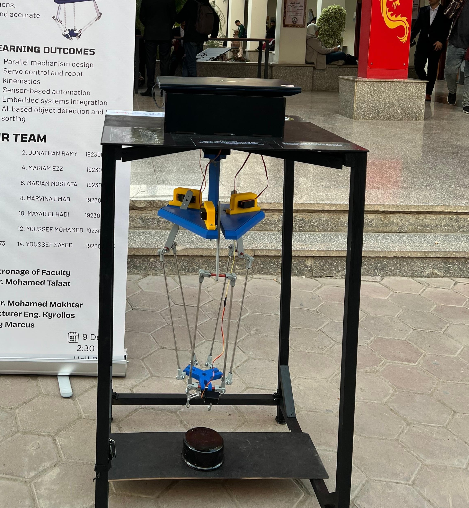

🤖 Delta Robot Sorting System
Overview
The Delta Robot Sorting System is a high-speed parallel robotic platform designed for automated pick-and-place operations. The robot integrates computer vision using an ESP32-CAM module to detect object colors, classify them, and perform intelligent sorting without human intervention. By combining robotics, embedded systems, inverse kinematics, and machine vision, the system demonstrates an efficient automation solution suitable for smart manufacturing and industrial sorting applications.
Objectives
- Design and implement a three-arm Delta Robot.
- Develop a computer vision system for color detection.
- Perform automated pick-and-place operations.
- Apply inverse kinematics for robot motion control.
- Integrate embedded systems with machine vision.
- Demonstrate autonomous object sorting.
Key Features
- High-Speed Parallel Robot Architecture.
- ESP32-CAM Computer Vision System.
- Real-Time Color Detection.
- Autonomous Object Classification.
- Pick-and-Place Automation.
- Servo-Based Motion Control.
- Inverse Kinematics Implementation.
- Embedded Control System.
- Object Sorting Mechanism.
- MATLAB Motion Simulation.
System Architecture
- Three Servo Motors.
- Delta Robot Mechanical Structure.
- ESP32-CAM Vision Module.
- Arduino Controller.
- Servo Driver.
- End-Effector Gripper.
- Color Detection System.
- Motion Control Algorithm.
- Inverse Kinematics Model.
- Sorting Decision Logic.
Technologies Used
- Arduino
- ESP32-CAM
- Computer Vision
- MATLAB
- Proteus
- SolidWorks
- Servo Motors
- Embedded Systems
- Inverse Kinematics
- Robotics
Challenges & Solutions
-
Challenge:
Achieving accurate object classification.
Solution: Implemented ESP32-CAM based color detection using image processing techniques. -
Challenge:
Coordinating robot movement precisely.
Solution: Applied inverse kinematics and servo control algorithms. -
Challenge:
Integrating vision and motion systems.
Solution: Established communication between the ESP32-CAM and Arduino controller.
Results
- Successful autonomous object sorting.
- Reliable color detection performance.
- Accurate pick-and-place operations.
- Smooth robot motion using inverse kinematics.
- Successful integration of vision and control systems.
- Validated through simulation and practical implementation.
Future Improvements
- AI-Based Object Recognition.
- Multi-Color Classification.
- Conveyor Belt Integration.
- Industrial Automation Deployment.
- Cloud Monitoring Dashboard.
- Advanced Vision Algorithms.
Gallery

Final Prototype of the Delta Robot Sorting System